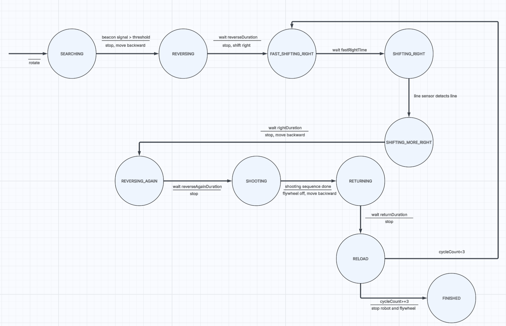
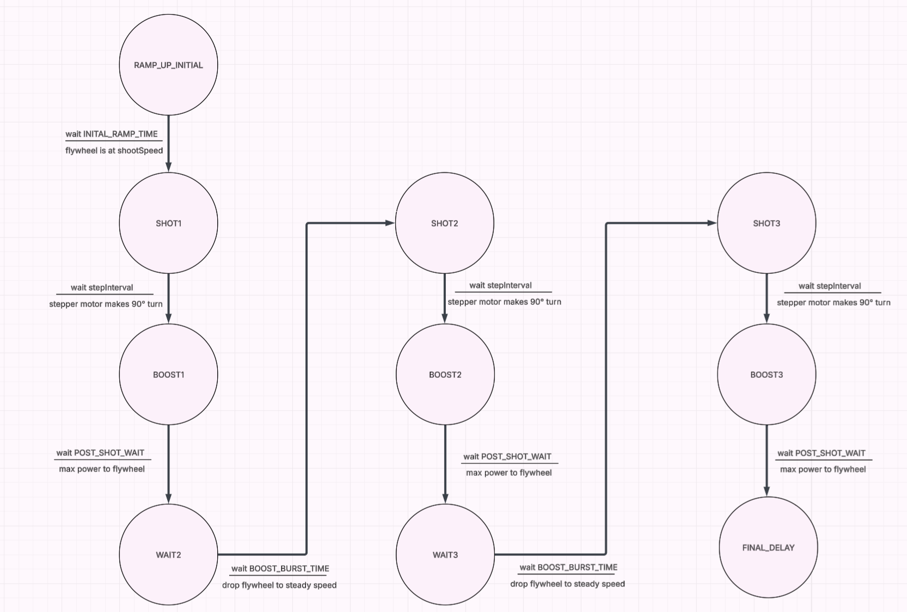

The drivetrain software manages 4 motors × 3 pins = 12 I/O pins on the Arduino Mega which handles digital direction logic (CW/CCW) and PWM speed control. We manipulate these in order to move the robot forward, backward, or sideways.
| Function | FL | FR | BL | BR | Result |
|---|---|---|---|---|---|
forward() | CW | CCW | CCW | CW | Move forward |
backward() | CCW | CW | CW | CCW | Move backward |
shiftRight() | CW | CW | CW | CW | Move right |
shiftLeft() | CCW | CCW | CCW | CCW | Move left |
void MecanumWheels::forward() { CW(_fl); CCW(_fr); CCW(_bl); CW(_br); }
void MecanumWheels::backward() { CCW(_fl); CW(_fr); CW(_bl); CCW(_br); }
void MecanumWheels::shiftRight() { CW(_fl); CW(_fr); CW(_bl); CW(_br); }
void MecanumWheels::shiftLeft() { CCW(_fl); CCW(_fr); CCW(_bl); CCW(_br); }
void MecanumWheels::turnRight() { CW(_fl); CW(_fr); CCW(_bl); CCW(_br); }
// H-bridge helpers drive L298N IN1/IN2 pins
void MecanumWheels::CW(int in1, int in2) {
digitalWrite(in1, LOW); digitalWrite(in2, HIGH);
}
void MecanumWheels::CCW(int in1, int in2) {
digitalWrite(in1, HIGH); digitalWrite(in2, LOW);
}
The beacon sensing system is the robot's long-range guidance, utilizing an analog signal processing chain to identify the 909 Hz infrared towers. The code executes a 360° chassis rotation while continuously sampling the beaconPin (A0) to detect a specific voltage displacement from a 2.5V reference center. By calculating the maxDisplacement within a set sampleWindow, the logic filters for the peak signal intensity. Once the displacement exceeds the thresholdAmplitude (calibrated at 1.9V), the isThresholdExceeded flag triggers an immediate robot.stop() command. This process ensures the robot precisely aligns its firing axis with the center of the arena's IR beacon before beginning its shooting sequence.
int raw = analogRead(sensorPin);
float voltage = (raw * 5.0) / 1023.0;
// near ~5.0V | far ~2.2V | ambient: low mV
bool isFarBeacon = (voltage >= FAR_MIN_V &&
voltage <= FAR_MAX_V);
bool isNearBeacon = (voltage >= NEAR_MIN_V &&
voltage <= NEAR_MAX_V);
facingFarBeacon = isFarBeacon && !isNearBeacon;
facingNearBeacon = isNearBeacon;
The line sensing system provides short-range positioning by detecting the black hog lines on the arena floor through frequency-modulated reflectance. In setup(), the tone() function watermarks the emitted IR light at 1250 Hz, which is then captured by a phototransistor on an interrupt-enabled pin (18). The attachInterrupt() function triggers the countPulse() ISR on every falling edge, allowing the software to measure the density of reflected light within a 20ms sampleWindow. The isLineDetected() function monitors the savedCount; when the robot passes over black tape, the IR absorption causes the pulse count to drop below a calibrated threshold (e.g., 50), signaling the robot to transition from shifting sideways into its shooting state.
DriveState determineState(bool lead, bool left, bool right) {
if ( lead && !left && !right) return FORWARD;
if ( lead && left && !right) return SLIGHT_LEFT;
if (!lead && left && !right) return HARD_LEFT;
if ( lead && !left && right) return SLIGHT_RIGHT;
if (!lead && !left && right) return HARD_RIGHT;
return LOST;
}
// ISRs count falling edges of 1250 Hz modulated IR.
// Low pulse count = black tape absorbed IR = line detected.
void countLead() { pulseLead++; }
void countLeft() { pulseLeft++; }
void countRight() { pulseRight++; }
The logic for the puck loader utilizes a non-blocking state machine to synchronize the stepper motor with the robot's shooting sequence. Instead of using blocking loops that would freeze the robot's sensors, the system employs a request90DegreeTurn() trigger. When the main mission code reaches the SHOOT state, it sets a target step count (calculated at 800 steps for a 90° indexing turn using 1/16 microstepping). The runStepperNonBlocking() function then pulses the stepPin only when the required interval has elapsed, allowing the Arduino to simultaneously manage flywheel RPM and IR beacon tracking. This ensures the revolving magazine door loads one puck into the firing chamber without interrupting the robot's other tasks, i.e. monitoring the IR beacon.
// 90° = 50 full steps × 16 microsteps = 800 pulses
const int stepsPer90 = 50 * 16;
void move90Degrees() {
for (int x = 0; x < stepsPer90; x++) {
digitalWrite(stepPin, HIGH);
delayMicroseconds(625);
digitalWrite(stepPin, LOW);
delayMicroseconds(625);
}
}
These manage the transition between states and ensure the hardware operates within precise timing windows.
startNewState(State newState): resets the stateStartTime for the next state and dynamically updates the motor trim (using robot.begin) to compensate for mechanical drift during specific maneuvers like reversing.isTimeElapsed(startTime, duration): non-blocking timer. It compares the current millis() against a reference point to check if a phase is complete, allowing the computer to keep processing other sensors in the meantime.globalStartTime & MAX_RUNTIME_MS: Master Kill Switch. This 2-minute timer ensures the robot immediately cuts all power to the flywheel and drivetrain at the competition's hard time limit.
